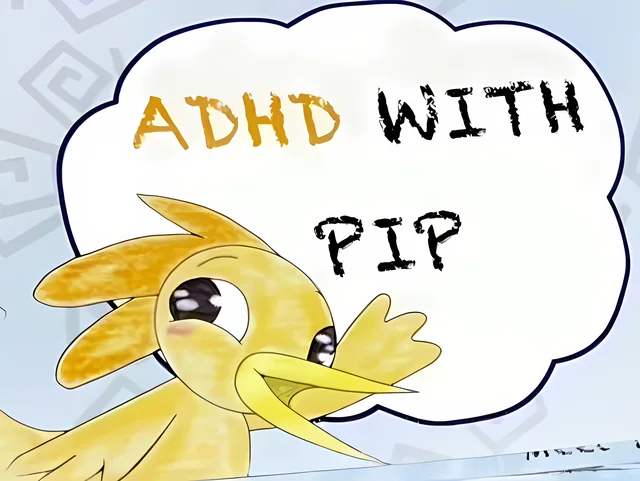
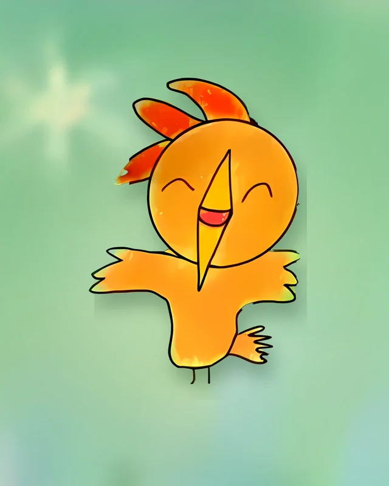
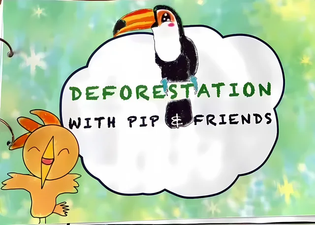

ADHD with PipHandmade book, title page
Chapter Three · Pip
Hand-drawn and coloured picture books about finding your place, and the forests worth protecting.

Character profile
A bright little bird at the heart of two handmade picture books: ADHD with Pip, about finding your place in the world, and Deforestation with Pip & Friends, where Pip shares the pages with a toucan and a forest worth protecting.
From the books


For publishers and creators
Picture books can make big ideas feel small enough to hold. I would love to help bring yours to life.